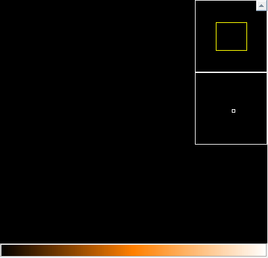

<div class="ui center aligned grid">
  <div class="row">
    
  </div>
  <div class="row">
    <div class="ui blue icon buttons">
      <button class="ui button"
              ngbTooltip="Open a FITS file"
              #openButtonTooltip="ngbTooltip"
              [tooltip-delay]="openButtonTooltip">
        <i class="fa fa-folder-open-o"></i>
      </button>
      <button class="ui button"
              ngbTooltip="Save image as.."
              #saveButtonTooltip="ngbTooltip"
              [tooltip-delay]="saveButtonTooltip">
        <i class="fa fa-save"></i>
      </button>
      <button class="ui button"
              ngbTooltip="Cut selected FOVs"
              #cutButtonTooltip="ngbTooltip"
              [tooltip-delay]="cutButtonTooltip">
        <i class="fa fa-cut"></i>
      </button>
      <button class="ui button"
              ngbTooltip="Select FOVs in a rectangle region"
              #rectSelectTooltip="ngbTooltip"
              [tooltip-delay]="rectSelectTooltip">
        <i class="fa fa-square-o"></i>
      </button>
      <button class="ui button"
              ngbTooltip="Select target centre"
              #centreSelectTooltip="ngbTooltip"
              [tooltip-delay]="centreSelectTooltip">
        <i class="fa fa-times"></i>
      </button>
      <button class="ui button"
              ngbTooltip="Add an FOV"
              #addButtonTooltip="ngbTooltip"
              [tooltip-delay]="addButtonTooltip">
        <i class="fa fa-times-circle-o"></i>
      </button>
      <button class="ui button"
              ngbTooltip="Image cut levels"
              #levelsButtonTooltip="ngbTooltip"
              [tooltip-delay]="levelsButtonTooltip">
        <i class="fa fa-area-chart"></i>
      </button>
    </div>
    <div class="ui blue icon buttons">
      <button class="ui button"
              ngbTooltip="Zoom in"
              #zoomInButtonTooltip="ngbTooltip"
              [tooltip-delay]="zoomInButtonTooltip">
        <i class="fa fa-search-plus"></i>
      </button>
      <button class="ui button"
              ngbTooltip="Zoom out"
              #zoomOutButtonTooltip="ngbTooltip"
              [tooltip-delay]="zoomOutButtonTooltip">
        <i class="fa fa-search-minus"></i>
      </button>
      <button class="ui button"
              ngbTooltip="Zoom to fit the window"
              #fitButtonTooltip="ngbTooltip"
              [tooltip-delay]="fitButtonTooltip">
        <i class="fa fa-square-o"></i>
      </button>
      <button class="ui button"
              ngbTooltip="Normal zoom"
              #normalButtonTooltip="ngbTooltip"
              [tooltip-delay]="normalButtonTooltip">
        <i class="fa fa-search"></i>
      </button>
    </div>
  </div>
</div>

<div class="ui form">
  <div class="three fields">
    <div class="field">
      <input placeholder="1x"
             style="text-align: center"
             ngbTooltip="Current magnification"
             #magInputTooltip="ngbTooltip"
             [tooltip-delay]="magInputTooltip">
    </div>
    <div class="field">
      <input placeholder="432, 276"
             style="text-align: center"
             ngbTooltip="Image pixel coordinates at mouse position"
             #mouseCoordsTooltip="ngbTooltip"
             [tooltip-delay]="mouseCoordsTooltip">
    </div>
    <div class="field">
      <input placeholder="0.0"
             style="text-align: center"
             ngbTooltip="Image pixel value at mouse position"
             #pxValTooltip="ngbTooltip"
             [tooltip-delay]="pxValTooltip">
    </div>
  </div>

  <div class="field">
    <label for="filenameNote">Image Filename</label>
    <input id="filenameNote">
  </div>
</div>


